M2Med is a medical events platform.M2Med is a medical events platform. Medical professionals use it to find conferences, register, track their CME credits, and manage speaking engagements.
The clients came to me with a built MVP, done only by a developer and no designer, or design thinking. I joined as the founding designer. There was no research, no design system, and no clear path through the app. I defined the scope of the work myself.
BeforeAfter
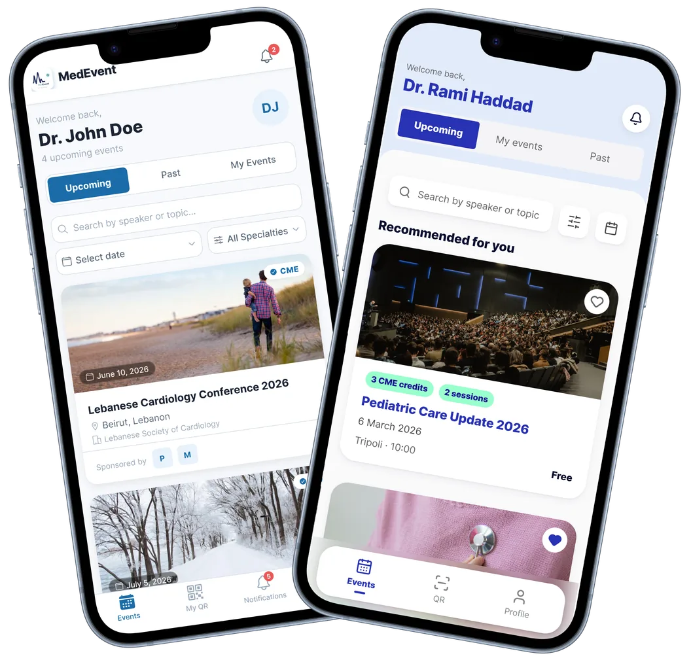
How I received M2med
(The abridged edition)
The interface didn't answer the question a doctor opens it to ask.
Choosing whether to go to an event asks the following questions: what it awards, what it costs, what it takes.
The cards had:
A CME badge with no number on it
No price, on the card or anywhere in the registration path
No session count, so no sense of the time it takes
A photo takes nearly half the card, and sponsor logos sit above the fold
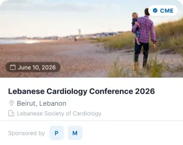
The interface didn't represent what actually happens at an event.
Two sessions could run at the same hour. The program has no way to show that
A speaker attends three events and uploads the same passport three times
The design was crammed with no color hierarchy and spacing. Buttons were not distinguishable and had no accessibility accommodations
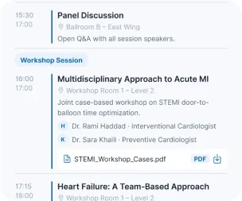
The end product had commercial rules the interface did not factor in.
Registration never shows the price, refund policies are invisible, and events sell out without a waitlist.
Events have prices, but registration never shows one.
Events have refund policies, but there's no refund handling.
Events have capacity limits, but there's no waitlist.
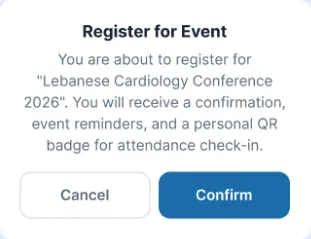
What I did
After researching with medical professionals, mapping user flows, comparing competitor apps, and understanding the commercial needs of business clients, I got to work. Here's a snapshot of a few of the changes I made.
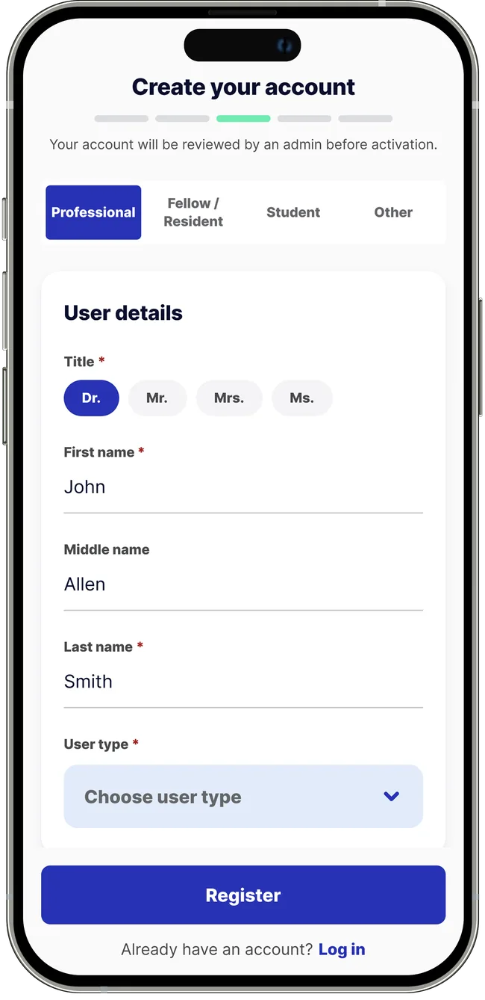
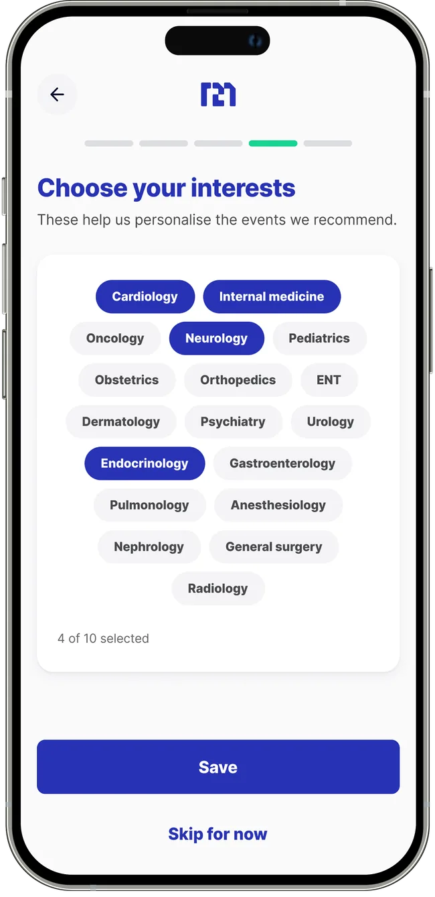
Before
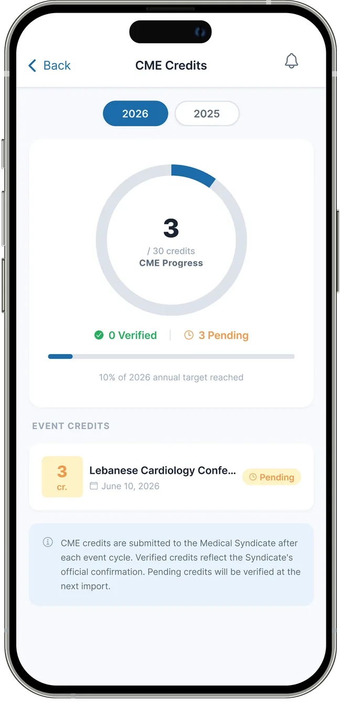
After
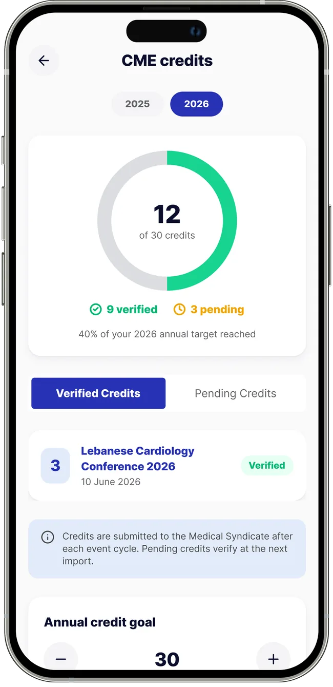
Before
Morning Session
09:00 10:00
Advances in Stent Technology
Ballroom A – Main Hall
An overview of next-generation drug-eluting stents and long-term clinical outcomes.
HDr. Rami Haddad · Interventional Cardiologist
Stent_Innovations_Slides.pdf PDF
Stent_Data_2026.pptx PPTX
10:30 11:30
Prevention Strategies in 2026
Ballroom A – Main Hall
Updated guidelines for hypertension, dyslipidemia, and lifestyle interventions.
KDr. Sara Khalil · Preventive Cardiologist
Prevention_Guidelines_2026.pdf PDF
After
Morning session
09:00 – 10:00
Advances in stent technology
Ballroom 4 · Main hall
Dr. Rami Haddad
Download docs
Parallel session
Two sessions run at this time. Pick a room
10:30 – 11:30Live now
Prevention strategies in 2026
Ballroom 4 · Main hall
Dr. Sara Khalil
Download docs
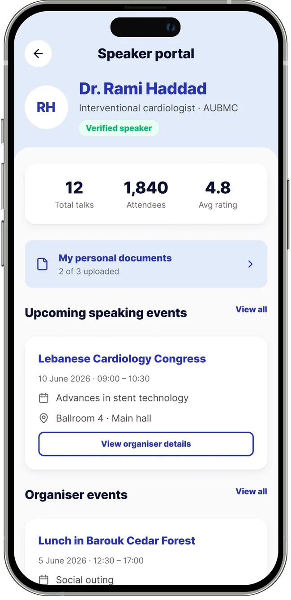
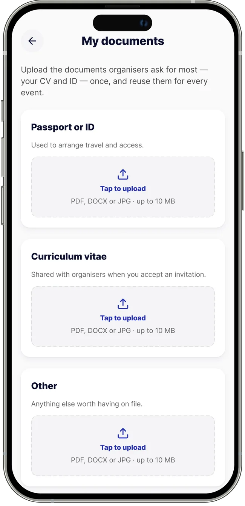
This event is full
All standard seats are booked. Join the waitlist and we will hold a place for you if one opens.
Joining is free. If a spot opens we secure your ticket and ask you to confirm.
Confirm your registration
Lebanese Cardiology Conference 2026 · 10 June 2026
Conference passAll sessions and workshops
Free
CME creditsAwarded after attendance
5
Total to pay Free
Your place is held as soon as you confirm. You can cancel any time before the event.
Add optional sessions
Choose any extras to include with your pass.
Conference passIncluded
$500
Prevention strategies in 202610:30 – 11:30 · Ballroom 4
Optional sessions have limited places and are confirmed on payment.
By paying you accept the event's terms. Optional sessions are non-refundable once confirmed; the conference pass follows the organiser's cancellation policy, shown before you cancel.
The system
I built a design system from nothing so the developer could build against it.
Foundations
I translated the brand into reusable foundations so every blue accent and neutral surface has one source of truth.
Brand mapping
Chrome Accent (#2832b4)
Surface Page (#fafafb)
Mint Green (#9FC)
Sky Blue (#E1EBFA)
Components
I created clearly named components and variants that map to code.
Text fieldChoice chipSegmented controlEvent cardEmpty stateProgress ringToggleBottom nav (attendee)Bottom nav (speaker)Icon set
Semantic chips
Credits, sessions, and fees each hold one meaning across the product.
3 CME credits2 sessionsAdditional fees
Navigation & Forms
Navigation was disambiguated into attendee and speaker shells. Attendees focus on events and QR tracking, while speakers access the portal for document management. Form patterns were standardized using the ComponentTextField and ComponentChoiceChip components. The active tab uses both colour and a bar under the icon, so the selected state does not rely on colour alone.
Attendee shell
Speaker shell
Adds a Portal tab for speaker-specific document and schedule management. Tap any tab.
Form patterns
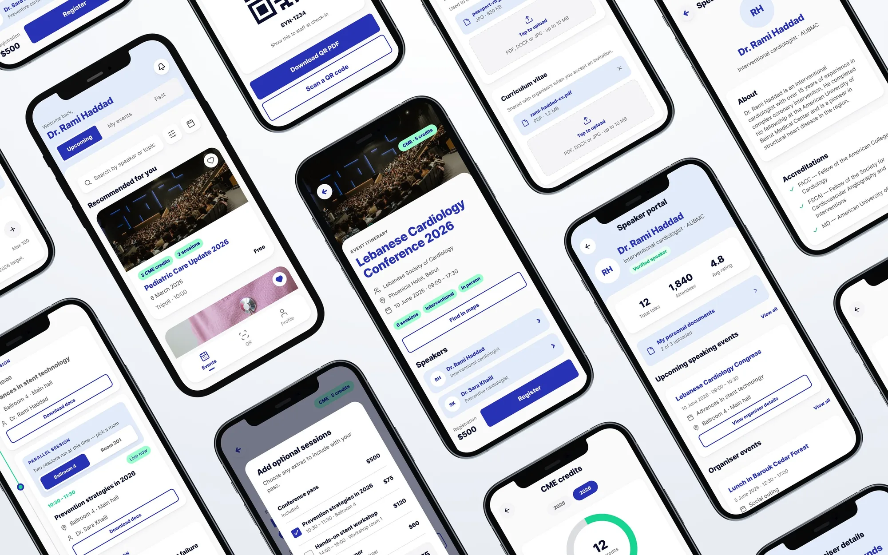
Outcome
Launching soon, in testing now.
The product is in testing on TestPilot. No usage metrics yet, because it hasn't shipped to users.